Results¶
This page covers the results of my research as it applies to analysis of networked CPS.
Design Time Results¶
Precise Analysis for Deterministic Queuing Systems¶
To model the network capability of the system and the application traffic patterns, we have developed a network modeling paradigm similar to Network Calculus’ traffic arrival curves and traffic shaper service curves.
Similarly to Network Calculus’ arrival curves and service curves, our network profiles model how the network performance or application traffic generation changes with respect to time. Whereas Network Calculus’ modeling transforms application data profiles and network service profiles into min and max curves for data received vs. size of time-window, our models take a simpler, deterministic approach which models exactly the data generated by the application and the data which could be sent through the network, allowing our performance metrics to be more precise. Specifically, the bandwidth that the network provides on a given communication link is specified as a time series of scalar bandwidth values. Here, bandwidth is defined as data rate, i.e. bits per second, over some averaging interval. This bandwidth profile can then be time-integrated to determine the maximum amount of data throughput the network link could provide over a given time. The bandwidth profile for the application traffic similarly can be time-integrated to determine the amount of data that the application attempts to send on the network link as a function of time.
Having time-integrated the bandwidth profiles to obtain data vs. time profiles that the application requires and that the system provides, we can use convolution ( ) on these two profiles to obtain the transmitted link data profile as a function of discrete time. The convolution we define on these profiles borrows concepts from the min-plus calculus used in Network Calculus, but does not use a sliding-window and instead takes the transformed minimum of the profiles. For a given application data generation profile,
) on these two profiles to obtain the transmitted link data profile as a function of discrete time. The convolution we define on these profiles borrows concepts from the min-plus calculus used in Network Calculus, but does not use a sliding-window and instead takes the transformed minimum of the profiles. For a given application data generation profile, ![r[t]](_images/math/8d85052c33844b2074fa63b28dcb671b60af6411.png) , and a given system link capacity profile 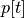, where 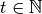, the link transmitted data profile 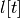 is given by the convolution Equation~ref{eq:convolution}. The difference
, and a given system link capacity profile 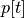, where 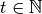, the link transmitted data profile 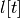 is given by the convolution Equation~ref{eq:convolution}. The difference ![(p[t-1] - l[t-1])](_images/math/9465858efbe52662754f887345be2050bbba2c0d.png) represents the difference between the amount of data that has been transmitted on the link 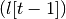 and the data that the link could have transmitted at full utilization
represents the difference between the amount of data that has been transmitted on the link 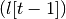 and the data that the link could have transmitted at full utilization ![(p[t-1])](_images/math/9c3f19d8351f954b7742f329357f44e13a73aded.png) . As demonstrated by the convolution equation,
. As demonstrated by the convolution equation, ![\forall t : l[t] \le r[t]](_images/math/10089afa2b64cbf0fa8f9c9d7c42e44f3dcb0e40.png) , which is the relation that, without lower-layer reliable transport, the link cannot transmit more application data for the application than the application requests as there will be packetization and communication header overhead as well.
, which is the relation that, without lower-layer reliable transport, the link cannot transmit more application data for the application than the application requests as there will be packetization and communication header overhead as well.
![y=l[t] &= (r \otimes p)[t] \\
&= min( r[t] , p[t] - (p[t-1] - l[t-1]) )
&\text{buffer}= sup\{r[t] - l[t] : t \in \mathbb{N}\}\\
&\text{delay} = sup\{l^{-1}[y]-r^{-1}[y] : y \in \mathbb{N}\}](_images/math/bdd5ee6bc6aa2e2fba6141bf50483816e7380779.png)

For relevant analysis, we must know that our analysis results (e.g. buffer size) will hold for the lifetime of the system. Because the system we are analyzing is the deterministic and periodic, we must determine how many periods of activity must be analyzed to capture full system behavior.
Consider a deterministic queuing system providing a data service function  to input data flow
to input data flow  to produce output data flow
to produce output data flow  . At any time
. At any time
 , the amount of data in the system’s buffer is given by
, the amount of data in the system’s buffer is given by  .
After servicing the input flow, the system has a remaining capacity function
.
After servicing the input flow, the system has a remaining capacity function  .
.
- : the service function of the system, data service capacity versus time
- : the input data flow to the system, data versus time
- : the output data flow from the system, data versus time
- : the amount of data in the system’s buffer at time , i.e.
![I[t]-O[t]](_images/math/2e3d35b2dc6e8c76e4412baaa21a1b190aed4d37.png)
- : the remaining service capacity of the system after servicing , i.e. 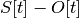
Because and are deterministic and periodic, they do not change
from period to period, i.e. given the period 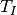 of ,
![\forall t,n : I[t] = I[t + n*T_I]](_images/math/e553891519dc0083bea30ab930ce6b358bd6e75d.png) . Similarly, given the period 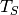
of , 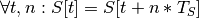.
. Similarly, given the period 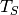
of , 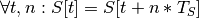.
We can determine the hyperperiod of the system as the lcm of input flow period and the service function period, 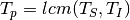.
At the start of the system,  , the system’s buffer is empty, i.e.
, the system’s buffer is empty, i.e.
 . Therefore, the amount of data in the buffer at the end of the first
period, 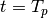, is the amount of data that entered the system on input flow
but was not able to be serviced by . At the start of the next period,
this data will exist in the buffer. Consider the scenario that the system’s remaining
capacity is less than the size of the buffer, i.e.
. Therefore, the amount of data in the buffer at the end of the first
period, 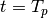, is the amount of data that entered the system on input flow
but was not able to be serviced by . At the start of the next period,
this data will exist in the buffer. Consider the scenario that the system’s remaining
capacity is less than the size of the buffer, i.e. ![R[T_p] < B[T_p]](_images/math/d196db590a966706d982ef4e085bf610163f423e.png) .
In this scenario, clearly,
.
In this scenario, clearly, ![B[2*T_p] > B[T_p]](_images/math/d122eaebcd3be7a2931e55b4f8a488d7fd88e9c2.png) , i.e. there will be more data in
the buffer at the end of the second period than there was at the end of the first period.
Since the system is deterministic, for any two successive periods,
, i.e. there will be more data in
the buffer at the end of the second period than there was at the end of the first period.
Since the system is deterministic, for any two successive periods,  ,
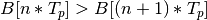, i.e. the amount of data in the system’s buffer increases
every period, therefore the system is unstable.
,
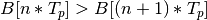, i.e. the amount of data in the system’s buffer increases
every period, therefore the system is unstable.
If however, there is enough remaining capacity in the system to service the data in the
buffer, i.e. ![R[T_p] >= B[T_p]](_images/math/f14219b37c6f7adadce486123a40ecf1f8514a45.png) , then 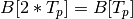. Similarly to above,
since the system is deterministic, for any two successive periods, ,
, then 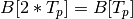. Similarly to above,
since the system is deterministic, for any two successive periods, ,
![B[n*T_p] = B[(n+1)*T_p]](_images/math/064adfcaa5038095b62fe3b69df90234102d7c0f.png) , i.e. the buffer size does not grow between periods,
therefore the system is stable.
, i.e. the buffer size does not grow between periods,
therefore the system is stable.
If we are only concerned with system stability, we do not need to calculate ,
and can instead infer system stability by comparing the values of the buffer at any
two period-offset times during the steady-state operation of the system, i.e. any
 . This means that system stability check resolves to
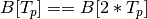.
. This means that system stability check resolves to
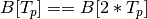.
Comparison with NC/RTC¶
To show how our analysis techniques compare to other available methods, we developed methods in our tools which allow us to analyze the input system using Network Calculus/Real-Time Calculus techniques as well as our own. Using these capabilities, we can directly compare the analysis results to each other, and then finally compare both results to the measurements from the actual system.
Taking the results from our published work, where our methods predicted a buffer size of

Analysis of TDMA Scheduling¶
So far, the description of the system provided network service profile (![p[t]=y](_images/math/380e32ec071686ecc085988bde7ac1814b342625.png) ), has been abstracted as simply the available bandwidth as a function of time integrated to produce the amount of data serviced as a function of time. In order to more precisely model the system, a network medium channel access protocol must be integrated into the abstract system provided profile. TDMA is such a protocol which assigns to each node one or more time slots in a repeating period during which only the selected node is allowed to transmit. We show how to model such a protocol and extend the abstract system network profile to include the model of the TDMA channel access protocol.
), has been abstracted as simply the available bandwidth as a function of time integrated to produce the amount of data serviced as a function of time. In order to more precisely model the system, a network medium channel access protocol must be integrated into the abstract system provided profile. TDMA is such a protocol which assigns to each node one or more time slots in a repeating period during which only the selected node is allowed to transmit. We show how to model such a protocol and extend the abstract system network profile to include the model of the TDMA channel access protocol.
As an example TDMA system which benefits from our analysis techniques, consider an application platform provided by a fractionated satellite cluster. A fractionated satellite cluster consists of many small satellites that may each have different hardware, computing, and communications capabilities. These capabilities are provided to distributed components of the satellite cluster’s applications. Such a system has the combined challenges of (1) being expensive to develop, test, and deploy, (2) being very difficult to repair or replace in the event of failure, and (3) having to support mixed-criticality and possibly multiple levels of security applications. For this system, the network between these satellites is a precious resource shared between each of the applications’ components in the cluster. To ensure the stability of the network resources, each satellite has a direct connection to every other satellite and is assigned a slot in the TDMA schedule during which the satellite may transmit. Each TDMA slot has a sinusoidally time-varying bandwidth profile which may differ from the other TDMA slot bandwidth profiles. The time-varying profile of the slot bandwidth comes from the coupling between the radios’ inverse-squared bandwidth-as-a-function-of-distance and the satellites’ sinusoidal distance-as-a-function-of-orbital-position.
Such a system and applications necessitates design-time guarantees about resource utilization and availability. Applications which utilize the satellite network need assurances that the network resources they require during each part of the orbital period will be satisfied. To provide these assurances, we provide the application developers and system integrators the ability to specify and analyze the network profiles as (possibly periodic) functions of time. Furthermore, the requirement for accurate predictions necessitates the incorporation of the TDMA scheduling and bandwidth profiling into the network modeling and analysis tools.
TDMA schedules can be described by their period, their number of slots, and the bandwidth available to each slot as a function of time. For simplicity of explanation, we assume that each node only gets a single slot in the TDMA period and all slots have the same length, but the results are valid for all static TDMA schedules. Note that each slot still has a bandwidth profile which varies as a function of time and that each slots may have a different bandwidth profile. In a given TDMA period ( ), the node can transmit a certain number of bits governed by its slot length (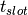) and the slot’s available bandwidth (
), the node can transmit a certain number of bits governed by its slot length (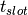) and the slot’s available bandwidth ( ). During the rest of the TDMA period, the node’s available bandwidth is . This scheduling has the effect of amortizing the node’s slot bandwidth into an effective bandwidth of
). During the rest of the TDMA period, the node’s available bandwidth is . This scheduling has the effect of amortizing the node’s slot bandwidth into an effective bandwidth of  . The addition of the TDMA scheduling can affect the buffer and delay calculations, based on the slot’s bandwidth, the number of slots, and the slot length. The maximum additional delay is 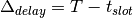, and the maximum additional buffer space is
. The addition of the TDMA scheduling can affect the buffer and delay calculations, based on the slot’s bandwidth, the number of slots, and the slot length. The maximum additional delay is 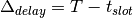, and the maximum additional buffer space is  . These deviations are shown in Figure~ref{fig:deviation}. Clearly, 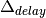 is bounded by and
. These deviations are shown in Figure~ref{fig:deviation}. Clearly, 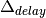 is bounded by and  is governed by . Therefore, because is dependent on , minimizing minimizes both the maximum extra delay and maximum extra buffer space.
is governed by . Therefore, because is dependent on , minimizing minimizes both the maximum extra delay and maximum extra buffer space.
Compositional Analysis¶
We have implemented min-plus calculus based compositional operations for the network profiles which allow us to compose and decompose systems based on functional components. For network flows, this means we can analyze flows individually to determine per-flow performance metrics or we can aggregate flows together to determine aggregate performance.
The composition is priority based, with each flow receiving a unique priority. This priority determines the oder in which the flows are individually analyzed, with the system’s remaining capacity being provided to the flow with the next highest priority. This is similar to the modular performance analysis provided by Real-Time Calculus.
The basis for this priority-based interaction is the QoS management provided by many different types of networking infrastructure. DiffServ’s DSCP provides one mechanism to implement this priority-based transmission and routing.
Delay Analysis¶
When dealing with queueing systems (esp. networks) where precise design-time guarantees are required, the delay in the links of the network must be taken into account.
The delay is modeled as a continuous function of latency (seconds) versus time. In the profiles, the latency is specified discretely as 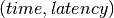 pairs, and is interpolated linearly between successive pairs.
Using these latency semantics, the delay convolution of a profile becomes
![r[t + \delta[t]] = l[t]](_images/math/58781499305d2973dc0695f586fc8daa50ad2fe3.png)
Where
- is the link profile describing the data as a function of time as it enters the link
- 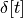 is the delay profile describing the latency as a function of time on the link
- is the received profile describing the data as a function of time as it is received at the end of the link
When analyzing delay in a periodic system, it is important to determine the effects of delay on the system’s periodicity. We know that the period of the periodic profiles is defined by the time difference between the start of the profile and the end of the profile. Therefore, we can show that if the time difference between the start time of the received profile and the end time of the received profile is the same as the period of the link profile, the periodicity of the profile is unchanged.
 is the period of the link profile
is the period of the link profile![r[t + \delta[t]]](_images/math/bb9f50d66397f6337f4cfddb0ca20a1977e482ce.png) is the beginning of the received profile
is the beginning of the received profile![r[(t + T_p) + \delta[(t + T_p)]]](_images/math/c80e1df5ca2c0f162a61382b667eecc1026dc37f.png) is the end of the received profile
is the end of the received profile
We determine the condition for which  :
:
![(T_p + t + \delta[T_p + t]) - (t + \delta[t]) = T_p \\
T_p + \delta[T_p + t] - \delta[t] = T_p \\
\delta[T_p + t] - \delta[t] = T_p \\
\delta[T_p + t] = \delta[t]](_images/math/0de0768086cdef2ab5d807033aac259fc1d48c36.png)
From this we determine that the periodicitiy of the profile is unchanged iff the profile is period-continuous, i.e. if the latency at the end of the profile is the same as the latency at the beginning of the profile. This is not a restrictive requirement since this just requires that the latency profile be periodic.
Routing Analysis¶
By incorporating both the latency analysis with the compositional operations we developed, we can perform system-level analysis of flows which are routed by nodes of the system. In this paradigm, nodes can transmit/receive their own data, i.e. they can host applications which act as data sources or sinks, as well as acting as routers for flows from and to other nodes. To make such a system amenable to analysis we must ensure that we know the routes the flows will take at design time, i.e. the routes in the network are static and known or calculable. Furthermore, we must, for the sake of flow composition as decribed above, ensure that each flow has a priority that is unique within the network which governs how the transmitting and routing nodes handle the flow’s data.
We have extended our network analysis tool to support such system analysis by taking as input:
- the flows in the network
- the provided service of each link in the network
- the network configuration specifying the nodes in the network and the routes
where a flow is defined by:
- ID of the source node
- ID of the destination node
- Priority of the flow
- flow profile, i.e. bandwidth vs time
We can then run the following algorithm to iteratively analyze the flows and the system:

Run Time Results¶
Middleware-integrated Measurement, Detection, and Enforcement¶
We have implemented these features based on our design-time results
- Traffic generators according to profile generated into sender code
- Receiver service according to profile generated into receiver code
- Measurement of output traffic on sender side and input traffic on server side generated into code
- Detection of anomalous sending on sender side
- Mitigation of anoumalous sending on sender side
- Detection of anomalous sending on receiver side
- Push back to sender middleware through out-of-band channel for anomaly detection on server side